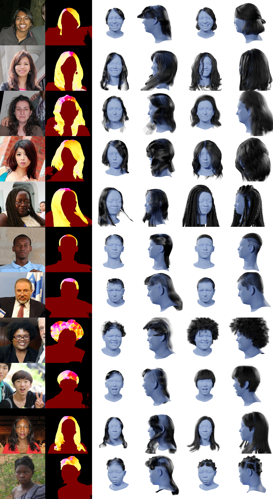

We present a method for prediction of a person's hairstyle from a single image.
Despite growing use cases in user digitization and enrollment for virtual experiences, available methods
are limited, particularly in the range of hairstyles they can capture.
Human hair is extremely diverse and lacks any universally accepted description or categorization, making
this a challenging task.
Most current methods rely on parametric models of hair at a strand level.
These approaches, while very promising, are not yet able to represent short, frizzy, coily hair and
gathered hairstyles.
We instead choose a classification approach which can represent the diversity of hairstyles
required for a truly robust and inclusive system.
Previous classification approaches have been restricted by poorly labeled data that lacks diversity,
imposing constraints on the usefulness of any resulting enrollment system.
We use only synthetic data to train our models. This allows for explicit control of diversity of
hairstyle attributes, hair colors, facial appearance, poses, environments and other parameters. It also
produces noise-free ground-truth labels.
We introduce a novel hairstyle taxonomy developed in collaboration with a diverse group of domain
experts which we use to balance our training data, supervise our model, and directly measure fairness.
We annotate our synthetic training data and a real evaluation dataset using this taxonomy and release
both to enable comparison of future hairstyle prediction approaches.
We employ an architecture based on a pre-trained feature extraction network in order to improve
generalization of our method to real data and predict taxonomy attributes as an auxiliary task to
improve accuracy.
Results show our method to be significantly more robust for challenging hairstyles than recent
parametric approaches.
Evaluation with taxonomy-based metrics also demonstrates the fairness of our method across diverse
hairstyles.
Hairstyle Taxonomy
Our hairstyle taxonomy consists of 18 attributes.
There are ten global attributes which are based on the whole hairstyle, for example the shape of the
hairline or surface appearance of the hair.
The scalp is divided into eight regions and each region is annotated with eight local attributes,
such as length and strand styling.
So in total each hairstyle has 74 taxonomic labels.
While we hope that the taxonomy presented is sufficiently fair, objective and complete, we recognize
that it is likely impossible for it to be truly complete.
We therefore encourage future work to extend the taxonomy as required and publish any modifications
- full details of the taxonomy can be found here.
Graphical overview of our proposed hair taxonomy consisting of global and regional
attributes. Note
that some values are not visualized for the 'Gathered' and 'Length' attributes.
Hairstyle Classification
We use a convolutional neural network (CNN) trained entirely on synthetic data.
The network is comprised of a frozen backbone that has been pre-trained through self-supervision
on a large corpus of real images to provide general-purpose visual features, DINOv2 followed by a
number of fully-connected layers optimized during training, visualized below. We find using a frozen,
pre-trained backbone to be highly beneficial for the task of hairstyle prediction.
Given the relatively small library of synthetic hairstyles, and limited visual quality of synthetic
images it is very easy for neural networks to over-fit when trained exclusively on our synthetic data.
High frequency details are also important to determine details of hair type and style, but the domain
gap between real and synthetic images may hamper the ability of CNNs to learn these details when trained
only on synthetic data. By using a model pre-trained on real images we minimize the ability of the network to over-fit,
as we only optimize small fully connected layers, and ensure that we are extracting features that generalize to real images.
The primary task of our network is hairstyle prediction, formulated as classification task for hairstyles from our synthetic library.
We also include an auxiliary task of hairstyle attribute prediction, outputting the taxonomic annotations associated with the hairstyle.
Attributes are predicted by dedicated fully-connected heads which take shared features from a common fully-connected layer as input.
This architecture ensures that features from this intermediate layer are informed by attributes that we know are important
(hair type, length, etc.) as determined by the taxonomy, rather than features indirectly inferred from a complex classification task.
The aim of this approach is to prevent 'bad' errors; that is to ensure that even if our method does not predict the perfect style,
it at least predicts a style with matching attributes. A classification-only approach has no concept of this semantic similarity.
Training and operating scheme of the proposed model. Given an input image we use a frozen
backbone and independent MLP heads to predict hairstyle and taxonomic attributes.
Qualitative Results
We conducted a number of experiments assessing the quality of our method.
As we cannot compare to recent parametric approaches quantitatively without manual labeling of
generated results with our taxonomy, we provide a qualitative comparison of our method with the
state-of-the-art method for hairstyle reconstruction, shown in the figure below.
While our method does not enable direct strand-wise representation, it is far more robust for diverse input hairstyles.
Existing methods show a strong bias to straight, long hair while our method is able to provide appropriate hairstyle
predictions for short, frizzy, coily and gathered styles, as well as long, straight hair.
HairStep performs well for long straight hair, but has a strong bias towards this hairstyle and type.
This results in poor performance for short styles and coily or curly hair types, even if results
appear to be of reasonable quality when viewed from the front. While our results provide less
direct representation in some cases, they are significantly more robust across diverse hairstyles.
Input
HairStep (strands)
HairStep (front)
HairStep (side)
Ours (front)
Ours (side)

Comparison of our method with recent parametric hair prediction approach HairStep.
HairStep results are manually aligned to reconstructed face meshes.Qualitative results for our method on the FairFace
evaluation subset.
Bottom row shows failure cases, specifically: missed hair, incorrect hair type/strand styling,
incorrect gathering, incorrect length, hairstyle not in library.
BibTeX
@inproceedings{meishvili2024hairmony,
title={Hairmony: Fairness-aware hairstyle classification},
author={Meishvili, Givi and Clemoes, James and Hewitt, Charlie and Hosenie, Zafiirah and Xian, Xiao and de La Gorce, Martin and Takacs, Tibor and Baltru\v{s}aitis, Tadas and Criminisi, Antonio and McRae, Chyna and Jablonski, Nina and Wilczkowiak, Marta},
booktitle={SIGGRAPH Asia 2024 Conference Papers (SA Conference Papers '24), December 3-6, Tokyo, Japan},
year={2024},
}